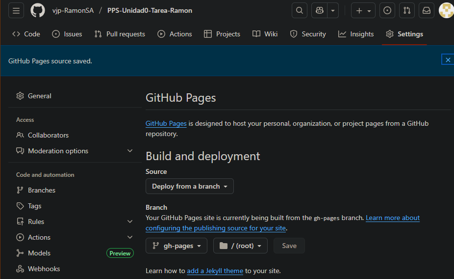
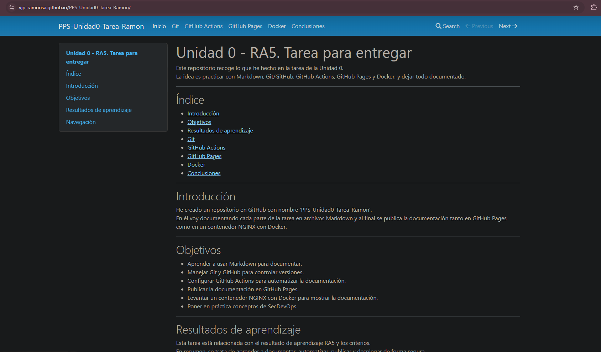

Publicación de Documentación con GitHub Pages
En este documento se explica el proceso de configuración y vinculación de GitHub Pages para publicar la documentación generada con MkDocs.
El objetivo es que la tarea quede accesible en una página web estática alojada en github.io.
Pasos para habilitar GitHub Pages
1. Configuración de GitHub Pages
- Dentro de Settings, bajar hasta la sección Pages.
- Seleccionar la rama
gh-pagescomo fuente de publicación. - Guardar los cambios.

2. Verificación de la publicación
- GitHub generará automáticamente la URL de tu sitio web en formato:
https://UsuarioGithub.github.io/PPS-Unidad0-Tarea-Ramon
- Esperar unos minutos y acceder a la dirección para comprobar que la documentación se muestra correctamente.
3. Ejemplo de configuración en mkdocs.yml
site_name: PPS-Unidad0-Tarea-Ramon
nav:
- Inicio: index.md
- Git: git.md
- GitHub Actions: gitActions.md
- GitHub Pages: gitPages.md
- Docker: docker.md
- Conclusiones: conclusiones.md
docs_dir: docs

4. Apariencia de la página
-
La documentación debe mostrar el menú lateral con las secciones configuradas en
mkdocs.yml. -
Verificar que aparecen los apartados:
index,git,gitActions,gitPages,docker,conclusiones.

Conclusión
La configuración de GitHub Pages permite publicar la documentación de forma sencilla y accesible.
Con este proceso se asegura que el repositorio esté disponible en la web y actualizado automáticamente con cada cambio realizado.